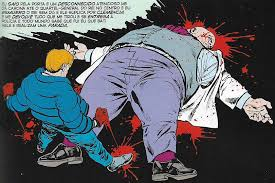
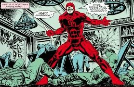
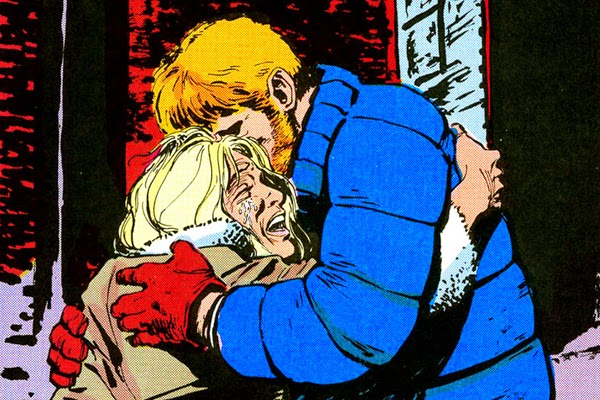

1. A Destruição da Vida de Matt Murdock
O Rei do Crime destrói a vida de Matt Murdock de todas as formas possíveis...
2. A Jornada de Redenção
Murdock precisa encontrar uma maneira de se reerguer após sua queda...
3. A Relação com Karen Page
A relação entre Matt e Karen é central na história, marcada por traição e eventual redenção...